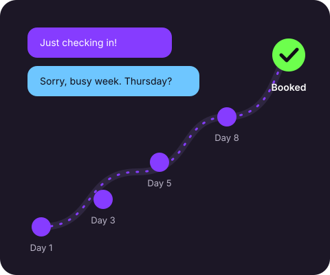

Young entrepreneurs
You're getting leads from social media and word of mouth, but you don't have a system for keeping up with all of them yet.
I started this site because I watched good leads disappear for one simple reason: nobody followed up with them.
Before building this site, I worked as an appointment setter for a fitness coaching company. My job was to reach out to people who had shown interest, answer their questions, and book them on calls with our closers.
The thing I noticed fast was that the first message almost never got the yes. People were busy. They forgot. They meant to reply and didn't. The leads who ended up booking were usually the ones who heard from us three, four, or five times, in a way that felt helpful instead of pushy.
Over time I built simple systems to make that easier: message templates, timing plans, and checklists so no lead slipped through the cracks. Follow-Up Fr Fr is where I share those systems so young entrepreneurs and small business owners can use them too.

These numbers come from a ZoomInfo roundup of sales follow-up research. They are the reason every framework on this site is built around more than one message.
| Follow-up statistic | What the data shows | What it means for you |
|---|---|---|
| Follow-ups needed to close | 80% of sales require at least 5 follow-up contacts | Plan for five touches from the start, not one or two. |
| Salespeople who keep going | Only 12% of reps make 3 or more follow-up attempts | Simply following up a third time puts you ahead of most of your competition. |
| Speed of the first response | Responding within 1 hour makes you 7x more likely to qualify a lead than waiting 24 hours | Answer new leads the same hour they reach out whenever you can. |
| One extra email | A single follow-up email increases reply rates by 11% | Always send at least one follow-up before you assume the answer is no. |
| Text vs. email | Text messages have a 98% open rate, compared to 22% for email | Use texts for short, important check-ins your customers can't miss. |
You're getting leads from social media and word of mouth, but you don't have a system for keeping up with all of them yet.
Barbers, cleaners, trainers, and other local businesses that grow when customers come back and send their friends.
If following up makes you uncomfortable, the frameworks here show you how to do it in a way that actually helps the other person.
Start with the frameworks, or send me a question about your own follow-up.